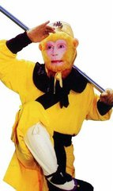
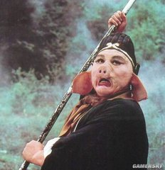
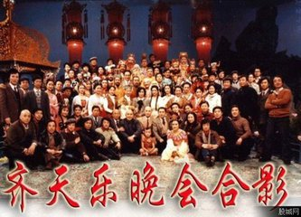
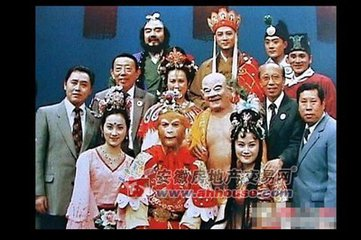

| 唐僧――唐朝人，名为陈讳，法名陈玄装，是师徒四人的师傅。他心地善良，经常把能分辨是非的孙悟空冤枉，总是把妖怪当成好人解救出来。不过他意志坚定，一心向佛，不畏艰难险阻，最终经历九九八十一难，带领三个徒弟取得真经。 | |
|  | 孙悟空 ――曾因大闹天宫被如来佛祖压在五行山下，后被唐僧救出，受观音点化保护唐僧前去西天取经，是唐僧的大徒弟。虽然有时淘气，但是唐僧的紧箍咒使他平静。他能有七十二般变化，他惩恶扬善的心从未改变，虽然受到曾唐僧的冤枉，但并不因此厌恶唐僧，也一直恭恭敬敬的保护唐僧，非常忠实。 |
|  | 猪八戒 ――原是天篷元帅，因犯了错误投了猪胎，之后受观音点化也前来保护唐僧西天取经，是唐僧的二徒弟。他好吃懒惰，不过却勤勤恳恳，当不听话时，孙悟空总能使他心服口服。不过他却非常快乐，无忧无畏。 |
 |
沙僧 ――原是卷帘大将，但因为打碎一只瓶子下界保护唐僧西天取经，他十分勤劳，总是挑担，识水性，在流沙河被收服。武艺并不算高强，但也勇敢的打头阵。 |
西游记剧照
 
《西游记》是一部神话小说，这是大众认同的，这个观点没有错。其实也是这样，整部《西游记》，都写的是神话故事。但是我要说，《西游记》不仅仅是神话小说，如果我们深入研究下去，就会发现《西游记》所蕴含的意义，就不只是塑造几个人物，用一些神奇的故事情节把他们联系起来，给人们茶余饭后谈古论今时提供一点聊天的话题那么简单了。在那些离奇古怪的故事情节里面，融合了中国古代文化三大主流佛、道、儒的思想精粹。广博的知识涉及到政治、经济、军事、文化，禅、易、医、巫等，理论都非常精深。